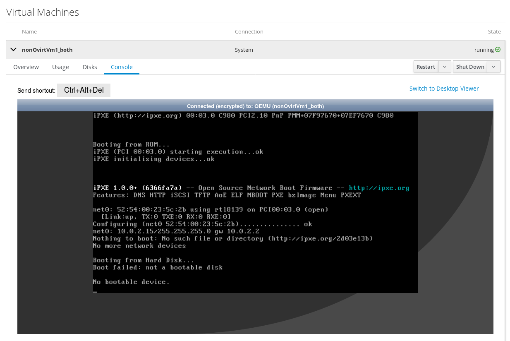
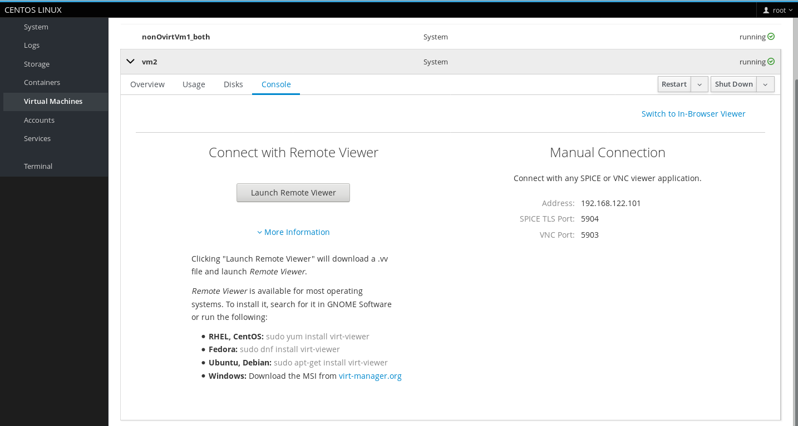
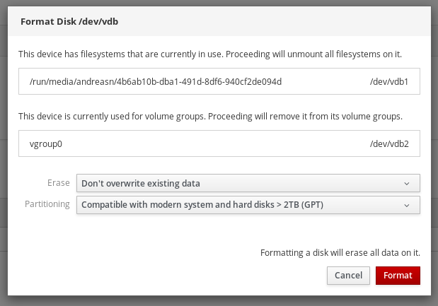

Cockpit is the modern Linux admin interface. We release regularly. Here are the release notes from versions 141 and 142.
Virtual machines display an interactive console
The Virtual Machines page now offers easy access to graphical consoles in the new “Console” tab. If the VM has a VNC server enabled, then there is now an inline noVNC console:

If the VM only has a SPICE server, or the inline console is not sufficient, you can use “Switch to Desktop Viewer” and with a single button click open virt-viewer for that VM:

See it in action:
Document how to grant/restrict access via polkit rules
Users who are not administrators can normally not perform actions such as changing the hostname or start/stop systemd services. The Privileges and Permissions section in the guide and the systemd feature page now describe how to use polkit rules allow fine-grained permissions such as “that user can restart this particular service”.
Attempt to tear down used partitions when formatting disks
Trying to format a disk on the “Disks” page which still has partitions which are in use (mounted or used as an LVM physical volume) will now attempt to unmount/remove the physical volume, instead of just failing:

Try it out
Cockpit 142 is available now: